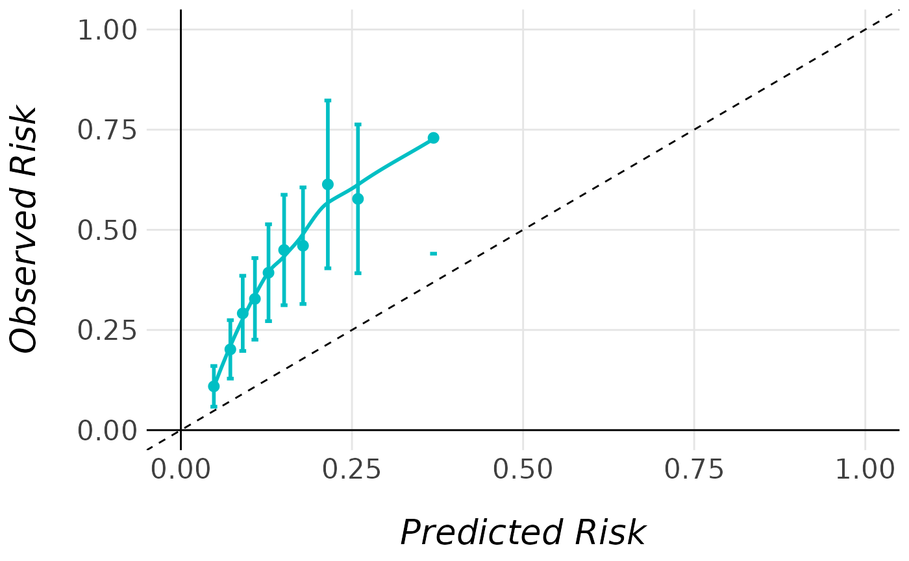
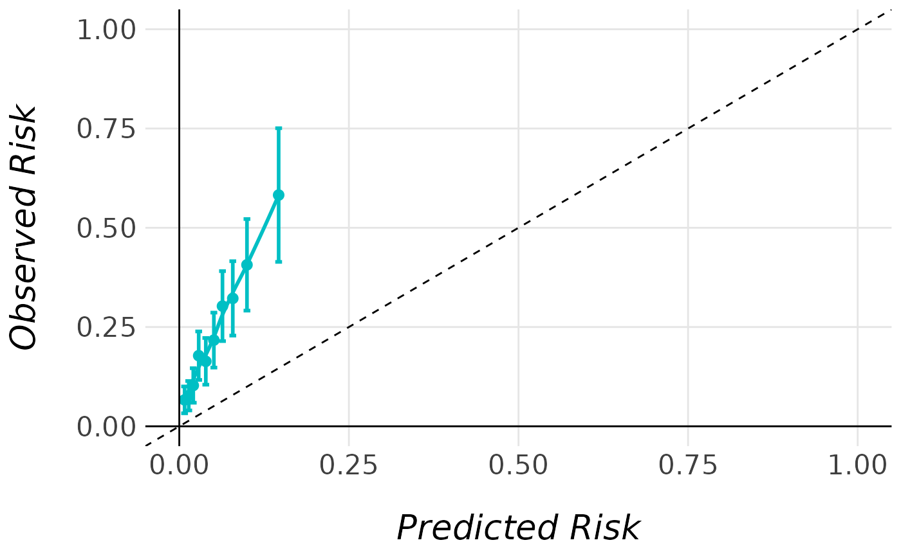
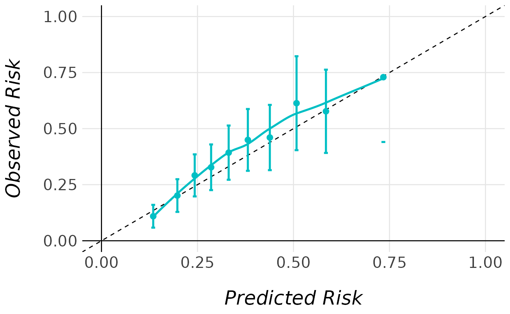
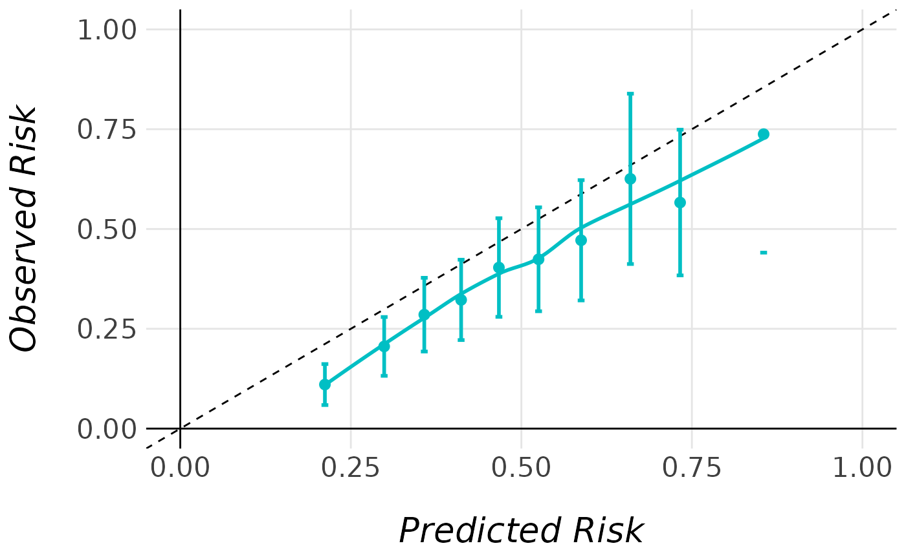
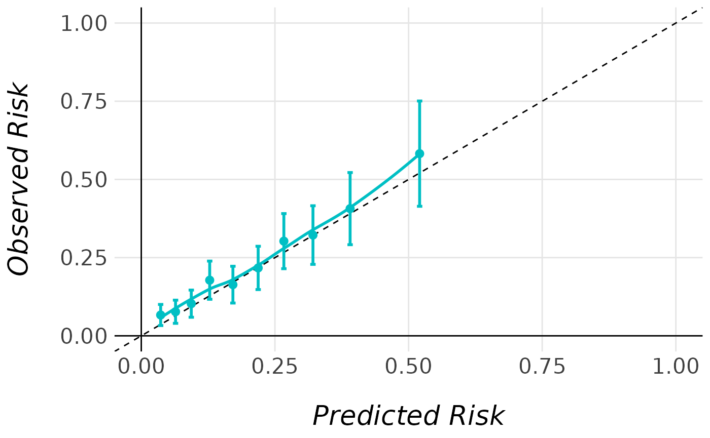
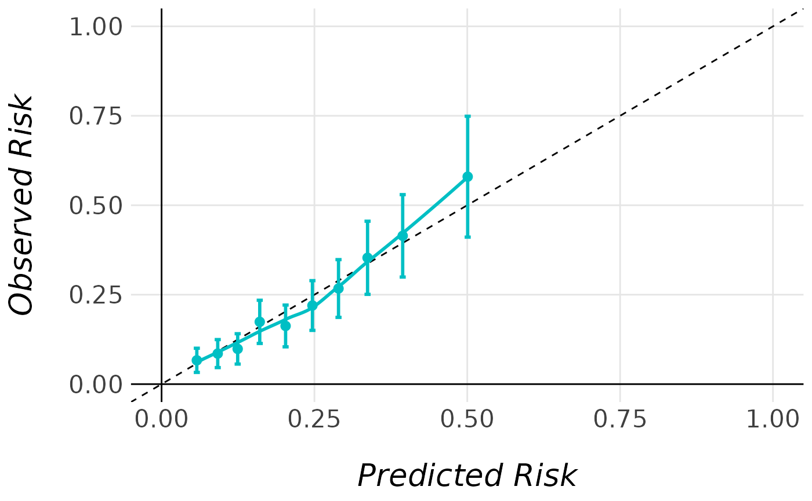

MiceExtVal example of use
Asier Ballesteros Domínguez
get-started.RmdRequired libraries
The following code snippet lists all the libraries needed to run this report.
library(MiceExtVal)
library(dplyr)
library(tidyr)
library(mice)
library(kableExtra)
library(gtsummary)
library(here)
library(tidyr)
library(tibble)
library(survival)As an example of the package MiceExtVal use we will
externally validate the Framingham model, see Wilson et al. (1998). We will use a dataset
obtained from kaggle. The example
of use will be structured as follows.
- Read and explore the dataset
- Impute the missing data
- Define the Framingham model
- Externally validate the model
Read and Explore the Dataset
To recreate an external validation of the Framingham model we need a dataset with the model variables. In the package we have included the Framingham dataset provided in kaggle by Shrey Jain. The dataset contains the variables described in next table. We can observe that there exists some missing values in some variables.
| Characteristic |
No N = 8,4691 |
Yes N = 3,1581 |
|---|---|---|
| Sex, 1=male, 2=female | ||
| 1 | 3,255 / 8,469 (38%) | 1,767 / 3,158 (56%) |
| 2 | 5,214 / 8,469 (62%) | 1,391 / 3,158 (44%) |
| Age, years | 53.83 (9.43) | 57.36 (9.45) |
| Total cholesterol, mg/dL | 238.08 (44.17) | 249.42 (47.47) |
| (Missing) | 299 | 110 |
| HDL cholesterol, mg/dL | 50.66 (15.63) | 45.61 (15.00) |
| (Missing) | 6,220 | 2,380 |
| LDL cholesterol, mg/dL | 174.04 (45.78) | 183.49 (49.24) |
| (Missing) | 6,220 | 2,381 |
| Systolic Blood Pressure, mmHg | 133.63 (21.57) | 143.54 (24.38) |
| Diastolic Blood Pressure, mmHg | 82.08 (11.18) | 85.62 (12.51) |
| Currently smoking, 0=No, 1=Yes | ||
| 0 | 4,804 / 8,469 (57%) | 1,794 / 3,158 (57%) |
| 1 | 3,665 / 8,469 (43%) | 1,364 / 3,158 (43%) |
| Diabetes, 0=No, 1=Yes | ||
| 0 | 8,219 / 8,469 (97%) | 2,878 / 3,158 (91%) |
| 1 | 250 / 8,469 (3.0%) | 280 / 3,158 (8.9%) |
| Time of follow up, days | 8,063.37 (1,648.67) | 4,178.32 (2,721.05) |
| 1 n / N (%); Mean (SD) | ||
In the following table there are represented the percentage o missings in the variables that have at least one row with a missing value.
| Variable | Percentage of Missings |
|---|---|
| ldlc | 73.97 |
| hdlc | 73.97 |
| totchol | 3.52 |
Impute Missing Data
To ammend these missing values we will impute their expected values using the mice package, see van Buuren & Groothuis-Oudshoorn (2011). We will execute the default imputation as we are no interested in be so precise, we just want to reproduce an use case where we need to impute some missing data and from this data externally validate one or more models.
pred_matrix <- mice::make.predictorMatrix(MiceExtVal::framingham)
pred_matrix[, "randid"] <- 0
pred_matrix[, "period"] <- 0
mice_data <- mice::mice(MiceExtVal::framingham)
fram_long <- mice::complete(mice_data, "long")The Framingham Model
With the data ready to be used we need to take some time to understand the model that we want to validate, the Framingham model. This model is a Cox model that predicts the risk to suffer a coronary heart disease in patients that are \(30-79\) years old. The Framingham model coefficients are represented in the following table.
| Variable | Men | Women |
|---|---|---|
| Age, y | 0.0483 | 0.3377 |
| Age squared, y |
|
-0.0027 |
| Diabetes | 0.4284 | 0.5963 |
| Smoker | 0.5234 | 0.2925 |
| TC, mg/dL | ||
| <160 | -0.6594 | -0.2614 |
| 160-199 |
|
|
| 200-239 | 0.1769 | 0.2077 |
| 240-279 | 0.5054 | 0.2439 |
| >280 | 0.6571 | 0.5351 |
| HDL-C, mg/dL | ||
| <35 | 0.4974 | 0.8431 |
| 35-44 | 0.2431 | 0.3780 |
| 45-49 |
|
0.1978 |
| 50-59 | -0.0511 |
|
| >60 | -0.4866 | -0.4295 |
| Blood Pressure | ||
| Optimal | -0.0023 | -0.5336 |
| Normal |
|
|
| High Normal | 0.2832 | -0.0677 |
| Stage I hypertension | 0.5217 | 0.2629 |
| Stage II-IV hypertension | 0.6186 | 0.4657 |
| Baseline survival function at 10 years, S(t) | 0.9002 | 0.9625 |
Requirements to Define the Model
The Framingham model had defined the variables that are used to calculate the model predictions. In the dataset we have the data needed to meet this requirements. Before defining the model we need to generate the variables that are not present in the dataset. In the previous table we can observe that some continous variables are converted into categorical. More precisely, the total cholesterol, HDL cholesterol and blood pressure are categorized.
Total Cholesterol
The total cholesterol variable is categorized into five categories, less than 160 mg/dL, between 160 and 199 mg/dL, between 200 and 239 mg/dL, between 240 and 279 mg/dl, and more than 280 mg/dL. The following code snippet generates the variable in the dataset.
| Variable | Men | Women |
|---|---|---|
| TC, mg/dL | ||
| <160 | -0.6594 | -0.2614 |
| 160-199 | - | - |
| 200-239 | 0.1769 | 0.2077 |
| 240-279 | 0.5054 | 0.2439 |
| >280 | 0.6571 | 0.5351 |
fram_long <- fram_long |>
dplyr::mutate(
totchol_less_160 = as.numeric(totchol < 160),
totchol_160_199 = as.numeric(totchol >= 160 & totchol < 200),
totchol_200_239 = as.numeric(totchol >= 200 & totchol < 240),
totchol_240_279 = as.numeric(totchol >= 240 & totchol < 280),
totchol_greater_280 = as.numeric(totchol >= 280),
)HDL cholesterol
The Framingham model characterizes the HDL cholesterol into five groups, less than 35 mg/dL, between 35 and 44 mg/dL, between 45 and 49 mg/dL, between 50 and 59 mg/dL, and more than 60 mg/dL. As before the following code snippet generates the variable in the dataset.
| Variable | Men | Women |
|---|---|---|
| HDL, mg/dL | ||
| <35 | 0.49744 | 0.84312 |
| 35-44 | 0.24310 | 0.37796 |
| 45-49 | - | 0.19785 |
| 50-59 | -0.05107 | - |
| >60 | -0.48660 | -0.42951 |
fram_long <- fram_long |>
dplyr::mutate(
hdl_less_35 = as.numeric(hdlc < 35),
hdl_35_44 = as.numeric(hdlc >= 35 & hdlc < 44),
hdl_45_49 = as.numeric(hdlc >= 45 & hdlc < 49),
hdl_50_59 = as.numeric(hdlc >= 50 & hdlc < 59),
hdl_greater_60 = as.numeric(hdlc >= 60),
)Blood pressure
In the model it is defined a variable that aggregates the systolyc
blood pressure and diastolic blood pressure into five groups of
hypertension. As defined by Wilson et al.
(1998), we categorize each of the individual blood pressure
variables into five groups, optimal, normal, high-normal, hypertension
I, and hypertension II-IV. If a patient have different blood pressure
categories we use the highest one as a representation of they state. The
following code adds the variable to the dataset, we first generate the
individual categorization variables and generate the
pressure variable as the aggregation of both.
| Variable | Men | Women |
|---|---|---|
| Blood Pressure | ||
| Optimal | -0.00226 | -0.53363 |
| Normal | - | - |
| High Normal | 0.28320 | -0.06773 |
| Stage I hypertension | 0.52168 | 0.26288 |
| Stage II-IV hypertension | 0.61859 | 0.46573 |
We first generate a variable called pressure that
categorize both pressures into one variable.
pressure_labels <- c(
"optimal", "normal", "high-normal", "hypertension I", "hypertension II-IV"
)
fram_long <- fram_long |>
dplyr::mutate(
sys_lvl = cut(
sysbp,
breaks = c(-Inf, 120, 130, 140, 160, Inf),
labels = pressure_labels
),
dys_lvl = cut(
diabp,
breaks = c(-Inf, 80, 85, 90, 100, Inf),
labels = pressure_labels
),
pressure = purrr::map2_int(
as.numeric(sys_lvl), as.numeric(dys_lvl), ~ max(.x, .y)
),
pressure = factor(
pressure,
labels = pressure_labels
)
)With the pressure variable we generate the variables
used in the model.
fram_long <- fram_long |>
dplyr::mutate(
bp_optimal = as.numeric(pressure == "optimal"),
bp_high_normal = as.numeric(pressure == "high-normal"),
bp_hypertension_i = as.numeric(pressure == "hypertension I"),
bp_hypertension_ii_iv = as.numeric(pressure == "hypertension II-IV")
)Selecting the Needed Variables
Once the Framingham variables are generated we need to create the
model in the MiceExtVal package. The Framingham model is
stratified by sex. Therefore, we need to generate two models, one for
males and another for females. The MiceExtVal package allow
us to define a Cox model using the MiceExtVal::mv_model_cox
function where we need to introduce the model
(coefficients), the mean value in the derivation cohort for
each of the variables (means), the model formula to know
the dependent variable (formula) and the survival basal
function for the time of the study (S0).
Generating Extra Needed Variables
Some variables like cursmoke or diabetes
are factors and to be used in the model we need to transform them to
numeric variables where \(1\) indicates
TRUE and \(0\) indicates
FALSE. We will also generate the variable age2
\(age^2\) needed for the females model.
Additionally, we generate the survival outcome.
fram_long <- fram_long |>
dplyr::mutate(
cursmoke = as.numeric(cursmoke == "1"),
diabetes = as.numeric(diabetes == "1"),
age2 = age**2,
anychd_surv = survival::Surv(timechd, anychd == "Yes")
)Finally, we generate the males and females datasets.
Generate the models
The models in the package are created using the
MiceExtVal::mv_model_cox function if we want to externally
validate a Cox model or MiceExtVal::mv_model_logreg if we
want to validate a logistic regression model. In this case we want to
validate the Framingham model that is a Cox model.
Each model needs different information in order to calculate the predictions in the Cox model we need to introduce the following parameters.
-
formula: A formula that defines the model. In this formula we need to define the model coefficients and if needed, like in this case, the means to center the variables in the \(\beta \cdot X\) calculation. -
S0: The value of \(S_0(t)\) for the time of study \(t\) in the model. In this case \(t = 10 \text{ years}\).
As the Framingham model is stratified by sex, we need to generate two models to externally validate it.
Males
The next code snippet generates the males model formula following the original mean values and the coefficients described in the previous tables.
males_formula <- anychd_surv ~ 0.0483 * (age - 48.3) +
0.4284 * (diabetes - 0.05) + 0.5234 * (cursmoke - 0.403) -
0.6595 * (totchol_less_160 - 0.075) + 0.1769 * (totchol_200_239 - 0.39) +
0.5054 * (totchol_240_279 - 0.165) + 0.6571 * (totchol_greater_280 - 0.057) +
0.4974 * (hdl_less_35 - 0.192) + 0.2431 * (hdl_35_44 - 0.357) -
0.0511 * (hdl_50_59 - 0.19) - 0.4866 * (hdl_greater_60 - 0.106) -
0.0023 * (bp_optimal - 0.202) + 0.2832 * (bp_high_normal - 0.202) +
0.5217 * (bp_hypertension_i - 0.225) +
0.6186 * (bp_hypertension_ii_iv - 0.128)Once we have defined the needed parameters of the model we can create the model as follows.
male_model <- MiceExtVal::mv_model_cox(
formula = males_formula,
S0 = 0.9002
)Females
For females we can reproduce what we have already done for males.
females_formula <- anychd_surv ~ 0.3377 * (age - 49.6) -
0.0027 * (age2 - 2604.5) + 0.5963 * (diabetes - 0.038) +
0.2925 * (cursmoke - 0.378) + -0.2614 * (totchol_less_160 - 0.079) +
0.2077 * (totchol_200_239 - 0.327) + 0.2439 * (totchol_240_279 - 0.2) +
0.5351 * (totchol_greater_280 - 0.91) + 0.8431 * (hdl_less_35 - 0.043) +
0.378 * (hdl_35_44 - 0.149) + 0.1978 * (hdl_45_49 - 0.124) -
0.4295 * (hdl_greater_60 - 0.407) - 0.5336 * (bp_optimal - 0.348) -
0.0677 * (bp_high_normal - 0.15) + 0.2629 * (bp_hypertension_i - 0.186) +
0.4657 * (bp_hypertension_ii_iv - 0.1)From the previous parameters we generate the
female_model to externally validate the Framingham female
model.
female_model <- MiceExtVal::mv_model_cox(
formula = females_formula,
S0 = 0.9625
)External validation
Once we have defined the Framingham model for the package we can now
start to externally validate the model. The package functions are
separated in two big groups, the functions that calculate predictions or
results from the model definition are started by
calculate_, and the functions that obtain external
validation results are started by get_.
The external validation can be structured in three phases.
- Calculate the predictions.
- Calculate the recalibrations.
- Obtain the external validation results.
Calculate the predictions
male_model <- male_model |>
MiceExtVal::calculate_predictions(model = _, data = male_fram_long)
female_model <- female_model |>
MiceExtVal::calculate_predictions(model = _, data = female_fram_long)As a result inside the model there are generated two tables
predictions_data and predictions_aggregated.
In the next table there are shown the first rows of the
predictions_data table, where there are all the predicted
values for each of the imputations.
| prediction | .imp | id |
|---|---|---|
| 0.051 | 1 | 2448 |
| 0.202 | 1 | 9428 |
| 0.097 | 1 | 14367 |
| 0.085 | 1 | 16365 |
| 0.140 | 1 | 20375 |
| 0.123 | 1 | 33077 |
In this second table there are shown the first rows of
predictions_aggregated where there are only one aggregated
prediction for each patient.
| id | prediction |
|---|---|
| 2448 | 0.051 |
| 9428 | 0.138 |
| 14367 | 0.156 |
| 16365 | 0.130 |
| 20375 | 0.179 |
| 33077 | 0.127 |
Model performance
The model performance can be separated in two. The ability of the model to discriminate high-risk patients from low-risk patients and its calibration i.e. the ability to match the real risk and predicted risk. The model C-Index is calculated using the Harrell’s C-Index and the calibration ability by generating calibration plots.
Calculating C-Index
C-Index in Males
male_model <- male_model |>
MiceExtVal::calculate_c_index(model = _, data = male_fram_long)C-Index in Females
female_model <- female_model |>
MiceExtVal::calculate_c_index(model = _, data = female_fram_long)Calculating Calibration Plot
Calibration Plot Males
male_model |>
MiceExtVal::get_calibration_plot_data(
model = _,
data = male_fram_long,
n_groups = 10,
type = "predictions_aggregated"
) |>
MiceExtVal::get_calibration_plot(data = _)
Calibration Plot Females
female_model |>
MiceExtVal::get_calibration_plot_data(
model = _,
data = female_fram_long,
n_groups = 10,
type = "predictions_aggregated"
) |>
MiceExtVal::get_calibration_plot(data = _)
Recalibration
male_model <- male_model |>
MiceExtVal::calculate_predictions_recalibrated_type_1(
model = _, data = male_fram_long
) |>
MiceExtVal::calculate_predictions_recalibrated_type_2(
model = _, data = male_fram_long
)
male_model |>
MiceExtVal::get_calibration_plot_data(
model = _,
data = male_fram_long,
n_groups = 10,
type = "predictions_recal_type_1"
) |>
MiceExtVal::get_calibration_plot(data = _)
male_model |>
MiceExtVal::get_calibration_plot_data(
model = _,
data = male_fram_long,
n_groups = 10,
type = "predictions_recal_type_2"
) |>
MiceExtVal::get_calibration_plot(data = _)
female_model <- female_model |>
MiceExtVal::calculate_predictions_recalibrated_type_1(
model = _, data = female_fram_long
) |>
MiceExtVal::calculate_predictions_recalibrated_type_2(
model = _, data = female_fram_long
)
female_model |>
MiceExtVal::get_calibration_plot_data(
model = _,
data = female_fram_long,
n_groups = 10,
type = "predictions_recal_type_1"
) |>
MiceExtVal::get_calibration_plot(data = _)
female_model |>
MiceExtVal::get_calibration_plot_data(
model = _,
data = female_fram_long,
n_groups = 10,
type = "predictions_recal_type_2"
) |>
MiceExtVal::get_calibration_plot(data = _)